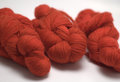
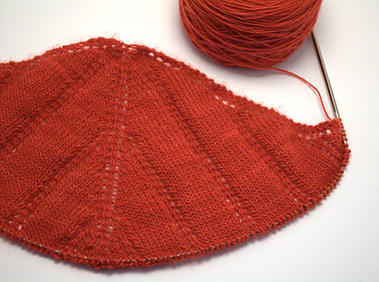
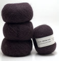
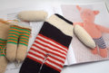
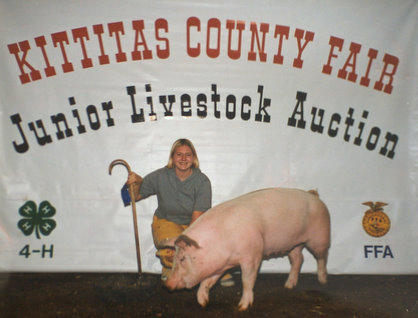

|
||
Premium Patterns Wintry Mix Mitts Love Bytes HawkeyeFree Patterns Kiddie Cadet Summerlin Ruffled Scarf Seamless DS Sock Simply Seamless Pouch Myriads of MushroomsExtras DIY Mitten Blocker Felt Patch Tutorial Yarn Dyeing Tutorial Needle Pouches Knitting Journal |
August 26, 2007 - Posted by Grace SchneblyKnitting My WingsYesterday I started my newest lace project… the Icarus Shawl by Miriam L. Felton! I’m not very far into it yet, but I am loving the way it is coming out. I took your guys’ suggestion and bought three skeins of Malabrigo Lace Baby Merino from Jimmy Beans Wool in the Sealing Wax colorway. I am totally loving this yarn! It is so soft and the color variations are subtle and so beautiful. I was also surprised that it wasn’t as expensive as I thought it would be. It is $8.95/skein for 470 yards, and I totally think it is worth it. I’m already trying to think of other projects I want to knit with this yarn. Maybe a Swallowtail Shawl or something from Victorian Lace Today? Any suggestions? Thanks everyone for recommending it… I’m totally back on a lace kick!  Alice and my friend Sue are joining me in this little mini KAL, and you can join along too if you want. Just leave a comment here and I’ll link to your progress as we continue to work on ours. Sue and I worked on our shawls for most of yesterday. She is using black Crystal Palace Kid Merino, ambitious for her first lace knit huh? I have heard so many horror stories about how difficult mohair yarns can be to work with, but hers is turning out so beautiful! It is much lighter and airier than mine, and it has a really nice soft halo too. It is amazing how different our shawls look just because they’re made from the two yarns. Alice will be knitting her Icarus Shawl from Knit Picks Shimmer in the Turquoise Splendor colorway. I she hasn’t started just yet, but will be soon. I can’t wait to see how hers turns out too. They’ll all be so unique! Now onto an unrelated topic... Lately I’ve been trying to knit something special my family and friends birthdays, and I feel pretty successful with my recent gifts. I made the La Luz Eye Mask for my Grandma, Marsupial Tote and Swat Team Kitty for my best bud Angie, and the Octopus for my sister Diane. I didn’t knit anything for Alice because what exactly do you knit for a knitter? Well anyways I had decided I was going to knit my mom a Squeaky Pig from the book Knitted Toys by Zoë Mellor. I ordered Knit Picks Palette in tan for the body and orange and green for the striped pants. I also decided to save some time by converting the pattern be knit in the round… well I wasn’t very happy with how the body turned out. Fist off it was tiny! Way tinier than it looks in the book. Maybe they got a really really small kid model to hold it to make the pig look bigger, kind of like how Apple got a big handed model to hold the iPhone to make it look smaller. Secondly I hated how my stitches were looking. Definitely not my best work. I don’t know if it was the yarn or because I wasn’t used to the size US 2 double pointed needles or what. I gave up on it after the completing the pants, but decided to try it flat like the instructions call for. That didn’t help my stitches look any prettier either! Now I have two headless, armless pig bodies laying around. I still didn’t want to give up on the project. I’ve been wanting to knit something from this book for a long time, and have always thought the Squeaky Pig was adorable. So I decided I’d give it one last shot out of out of worsted weight yarn and knit in the round. I was pretty happy with how the body turned out, although I didn’t have a good pig pink so I went for a black and white Hampshire pig. I knit both arms, and then started on the head and almost finished before I realized that the head isn’t supposed to be completely seamed up. Although the problem was totally fixable, by this point I was just fed up and gave up on it. I rarely completely frog projects, so I am kind of disappointed. You may have won this round Squeaky Pig, but this isn’t the last you’ve heard from me. I leave you with this...  |
   Recent ReviewsRecent Posts
 Our Favorites
|
| © 2007 KathrynIvy.com | ||
{kind=link}
{kind=link}
{kind=link}